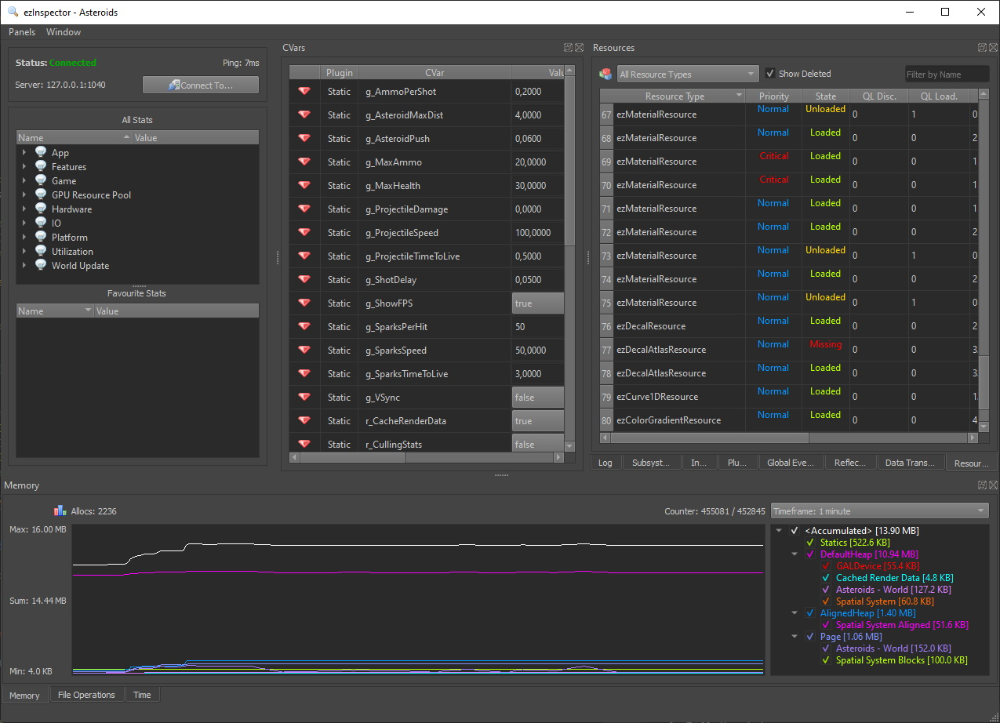

ezInspector
ezInspector is a tool to monitor some internal state of an application. It helps observing how the application operates, which resources it accesses and why it might behave as it does.

The current version allows to monitor the following data:
- Log: The Log panel displays all the log messages. It allows to filter by severity and search by keywords.
- Memory Usage: The Memory panel displays the number of allocations, the amount of memory in use (per allocator) and a time-line how memory usage changes.
- Input: Shows which physical buttons are available and what their state is. Also displays the virtual input actions, by which keys they get triggered and what their current state is.
- Subsystems: Displays information about all the available subsystems in the engine.
- Plugins: Shows which plugins are loaded, which other plugins they depend on and whether they can be reloaded dynamically.
- Global Events: Shows which global events are registered and how often they occur.
- File Operations: This panel shows which files get accessed by the engine, whether they occur on the main thread, how much data is read or written per operation, how much time that takes (and thus why an application might be blocking or stuttering). Allows to sort and filter by different criteria to get a better grasp at what and how data is accessed.
- CVars: This panel displays all CVars that are available. You can not only see their current values, but also modify them, such that you can change the behavior of the application without restarting it. This allows to quickly change parameters of things that you are trying out, such that you can see the effects immediately.
- Stats: Using ezStats a game can display the status of certain internals. This allows to make it easy to inspect what a game object is doing or what state some component is in. So instead of printing this debug information on screen inside the game, you can watch it with ezInspector. Additionally ezInspector allows to mark stats as 'favorites' which means you can output hundreds of stats in your game, but easily only display the subset that you are currently interested in inside ezInspector. Additionally, it is now possible to display the history of a stat variable in a separate panel as a graph. This makes it easy to observe how some stats behave over time (such as frame time, frames-per-second, etc.).
- Time: Displays all ezClock instances that are active. Shows the raw time step and the filtered time step, which allows to see hiccups and general performance characteristics of the application.
- Reflection: Shows all reflected types and their class hierarchy. Also shows which properties each reflected type provides.
- Data Transfer: This panel allows to pull data from an application. What data can be pulled is determined by what the application provides. For example an application might provide the G-Buffer as a set of images to be pulled. See ezDataTransfer for further details.
- Resources: This panel shows all loaded resources. You can filter by type and name and you can sort the resources by various criteria.
Setting up your game to support ezInspector
Note: None of this setup is required when you use ezGameApplication as your application base class, or even better, your game only implements an ezGameState and is run directly through ezPlayer.
The inspection functionality is implemented in the ezInspectorPlugin plugin, so you need to have that compiled.
In your application you can then either simply always link against that plugin to activate the functionality, or you can load it dynamically at runtime.
Additionally the ezInspectorPlugin uses ezTelemetry to phone home, so you need to have that activated.
// Activate ezTelemetry such that the inspector plugin can use the network connection.
ezTelemetry::CreateServer();
// Load the inspector plugin
// The plugin contains automatic configuration code (through the ezStartup system),
// so it will configure itself properly when the engine is initialized by calling ezStartup::StartupCore().
// When you are using ezApplication, this is done automatically.
ezPlugin::LoadPlugin("ezInspectorPlugin");
You should insert this code somewhere in the engine initialization. When you are using ezApplication, put this into the AfterEngineInit function.
Additionally you need to make sure that ezTelemetry is updated once per frame, to ensure that all changes are sent to ezInspector regularly:
// Call this once per frame to make sure all changes are transmitted
ezTelemetry::PerFrameUpdate();
And that's it! The rest is done automatically.
How to get the best out of ezInspector
Some tips, what to do to benefit from the inspection functionality:
- Use the logging system
ezLogto output what your application is doing, and which errors it encounters. UseEZ_LOG_BLOCKto group logging information. - Use the
ezStatssystem to write out information about what is going on in your application. The more information that you track, the easier you can figure out what is going wrong. - Use CVars to allow configuration of your code at runtime. It is easy to add CVars and thus you should use them whenever you are working on something new, to be able to tweak its behavior quickly. Once you are finished with something you should strip all unnecessary CVars again, but often it makes sense to still keep some configuration options for later.
- When you are developing larger subsystems that you might want to know the memory consumption of, use a custom allocator for all allocations in that subsystem, then you can track its memory behavior better.